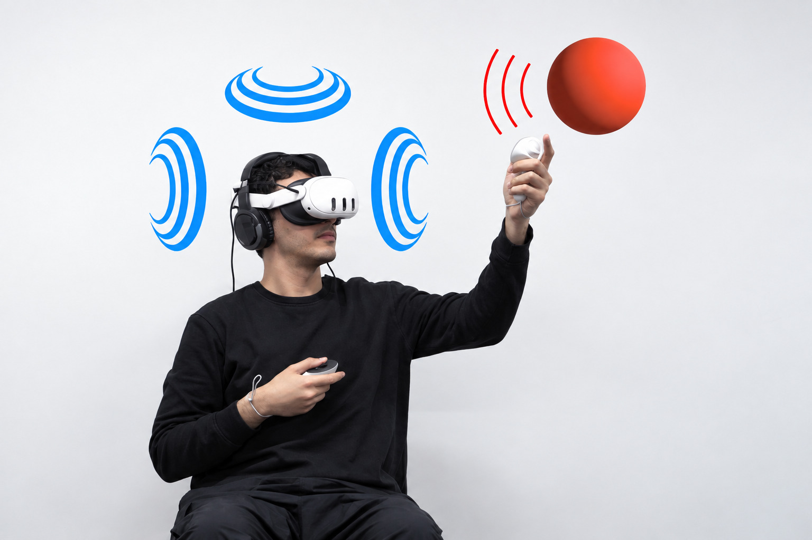
From Coarse Search to Precise Alignment
VRで視覚を使わずに対象を探し、正確に位置を合わせるための音声ガイダンス。
Ph.D. Student, University of Tsukuba
アクセシビリティと Human-Computer Interaction を中心に、触覚グラフィックス、視覚障害者の身体動作学習支援、インクルーシブなスポーツなどを研究しています。
日本学術振興会 特別研究員 DC2
日本科学未来館 非常勤研究員
JST BOOST
筑波大学大学院 情報学学位プログラム 博士後期課程
企業での勤務
筑波大学大学院 情報学学位プログラム 博士前期課程
筑波大学 情報メディア創成学類

VRで視覚を使わずに対象を探し、正確に位置を合わせるための音声ガイダンス。
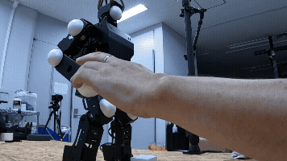
卓上ヒューマノイドロボットの動きを触って学ぶ、視覚障害者向けの動作学習。
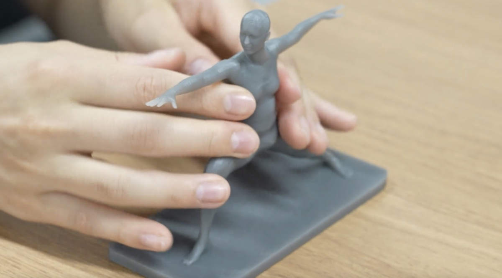
3Dの触覚模型を使い、視覚障害者の身体動作学習を支援する研究。
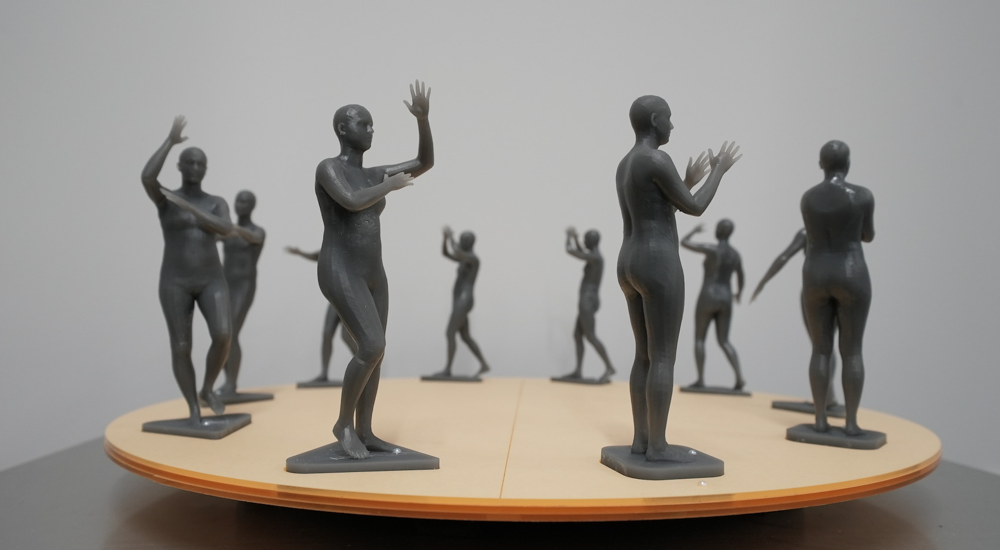
回転台に並べた3Dプリント模型で、動きの連続を触って理解する研究。
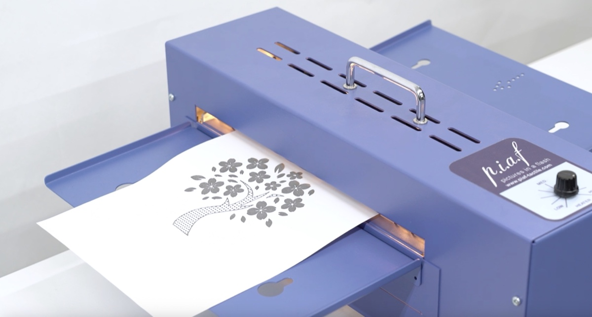
生成AIを用い、絵本のイラストから触覚グラフィックスを共創する研究。
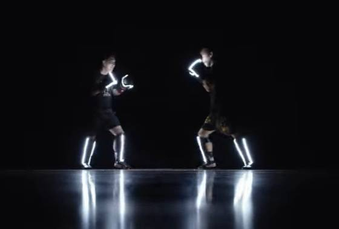
ロービジョンの人と共に設計したキックボクシング体験。
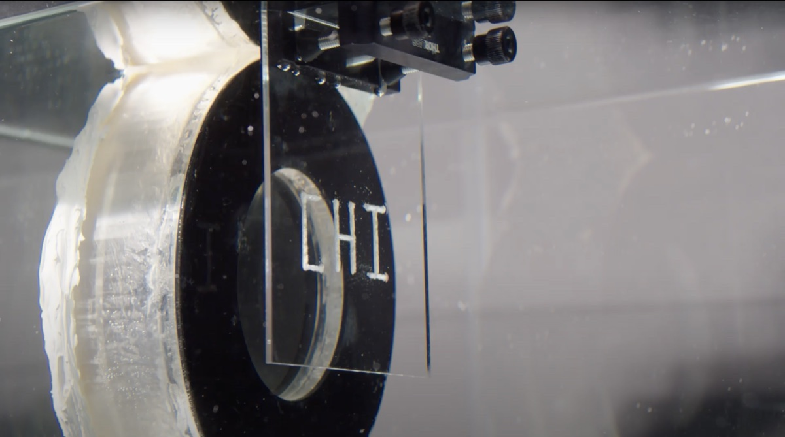
集束超音波を用いて、アクリル板に触れられる凹凸をつくる研究。
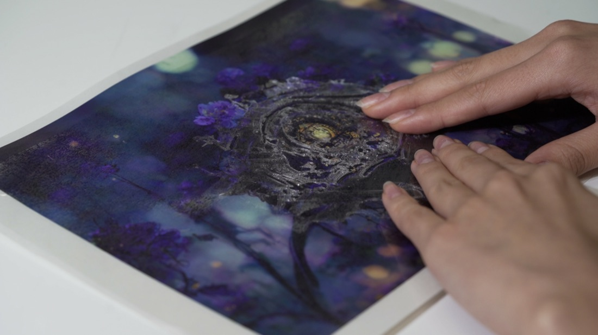
生成AIとデジタルファブリケーションを活用した、触れる絵本の制作。
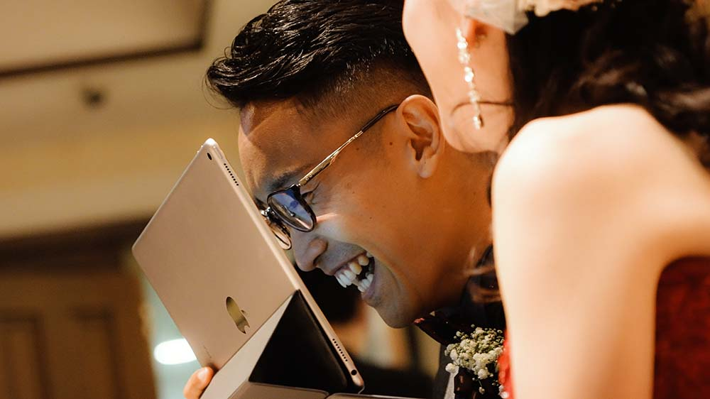
ロービジョンの参列者が披露宴の様子や場所を把握できるよう、映像配信と音響で支援する研究。
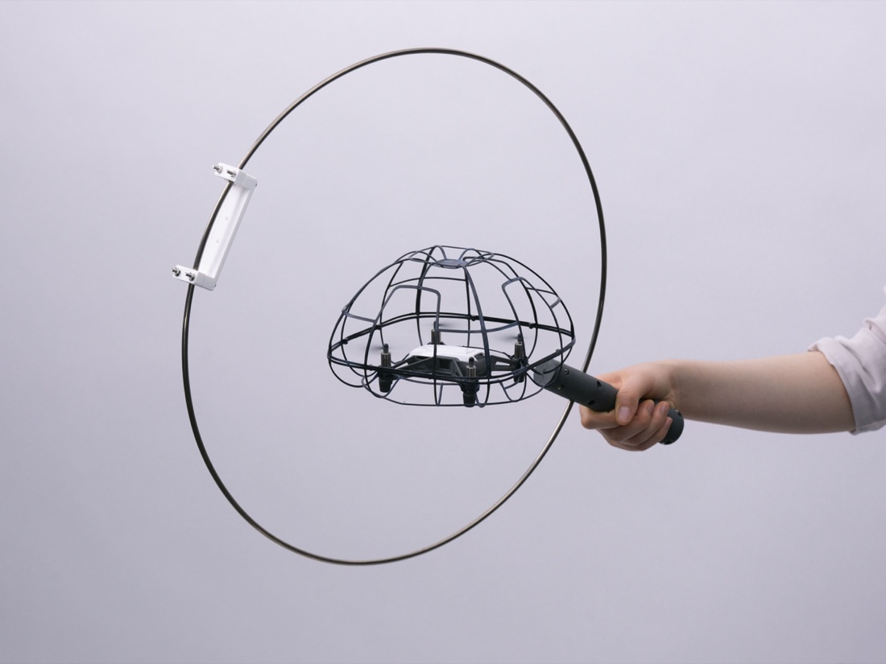
ドローンを球として用いる、ロービジョンの人も参加できるバドミントン。
Kengo Tanaka, Xiyue Wang, Hironobu Takagi, Yoichi Ochiai, Chieko Asakawa
Kengo Tanaka, Renato Alexandre Ribeiro, João Guerreiro, Hironobu Takagi, Yoichi Ochiai, Chieko Asakawa
Kengo Tanaka, Xiyue Wang, Hironobu Takagi, Yoichi Ochiai, Chieko Asakawa
Kengo Tanaka, Xiyue Wang, Hironobu Takagi, Yoichi Ochiai, Chieko Asakawa
Kengo Tanaka, Ayaka Tsutsui, Takahito Murakami, Yoichi Ochiai
Ayaka Tsutsui, Kenta Yamamoto, Yinan Zhao, Ippei Suzuki, Kengo Tanaka, Yoichi Ochiai
Ayaka Tsutsui, Tatsuki Fushimi, Takahito Murakami, Ryosei Kojima, Kengo Tanaka, Yoichi Ochiai
Yoichiro Katayama, Ayaka Tsutsui, Kengo Tanaka, Tatsuki Fushimi, Yoichi Ochiai
Ayaka Tsutsui, Takahito Murakami, Tatsuki Fushimi, Ryosei Kojima, Kengo Tanaka, Yoichi Ochiai
Kengo Tanaka, Ayaka Tsutsui, Yoichi Ochiai
Ayaka Tsutsui, Kengo Tanaka, Yaman Yu, Bektur Ryskeldiev
Masaaki Sadasue, Ippei Suzuki, Kosaku Namikawa, Kengo Tanaka, Chieko Nishimura, Masaki Okamura, Yoichi Ochiai
Kohei Ogawa, Kengo Tanaka, Tatsuya Minagawa, Yoichi Ochiai
Kengo Tanaka, Taisuke Ohshima, Yoichi Ochiai
Xanat Vargas Meza, Kengo Tanaka, Yoichi Ochiai
Ryosei Kojima, Akihisa Shitara, Tatsuki Fushimi, Ryogo Niwa, Atushi Shinoda, Ryo Iijima, Kengo Tanaka, Sayan Sarcar, Yoichi Ochiai
Kengo Tanaka, Tatsuki Fushimi, Ayaka Tsutsui, Yoichi Ochiai
Ayaka Tsutsui, Tatsuki Fushimi, Kengo Tanaka, Takahito Murakami, Yoichi Ochiai
Kengo Tanaka, Kohei Ogawa, Tatsuya Minagawa, Yoichi Ochiai
Kenta Yamamoto, Ayaka Tsutsui, Yinan Zhao, Ippei Suzuki, Kengo Tanaka, Yusuke Koroyasu, Yoichi Ochiai
優秀賞 — NYAA 2024 ゲーム＆インタラクション部門 / HIFU Embossment
最優秀賞 — 第29回学生CGコンテスト インタラクション部門 / Low Vision Boxing
準グランプリ — Creative Hack Award / Low Vision Boxing
アクセンチュア インタラクティブ賞 — 第27回学生CGコンテスト / Drone Badminton
情報学群長表彰 — 筑波大学
ファイナリスト — Creative Hack Award 2017 / Spring-Pen
Student Award — YouFab Global Creative Awards 2017 / Spring-Pen
ノミネート — 第23回学生CGコンテスト / Spring-Pen
日本学術振興会 特別研究員 DC2280万円2年間
第30回JRPS研究助成 ライオンズ賞 ↗100万円「生成AIを活用したロービジョン者の運動時空間認知支援基盤の構築」
ユニベール財団 研究助成80万円「視覚障害者の科学館・博物館鑑賞におけるガラス越し展示物の探索支援」
つくばマラソン「マラソンを科学する」支援事業 ↗20万円「AI による視覚障碍者ランナーの景色共有を科学する」
AI for Science (SPReAD) 第2回300万円「視覚障害者の書道学習に向けた運筆Physical AI基盤の構築」
令和7年度 第2回 サイバーメディスン研究センター 若手研究支援プログラム100万円「人工知能を用いた産後女性のメンタルヘルス支援に向けた表情・音声指標の探索的検討」メンバー：三浦 幸恵、筒井彩華、田中賢吾
つくばスマートシティ社会実装トライアル支援事業 ↗100万円「視覚障害者も楽しめる光るキックボクシング」メンバー：筒井彩華、田中賢吾、Zhao Yinan
JST BOOST300万円2年間
チャレスポ！TOKYO — パラ×テクノロジー体感展「Low Vision Boxing」招待ブース展示 ↗主催：東京都・東京都障害者スポーツ協会
東京タワー スポーツチャレンジ2024 — Low Vision Boxing ↗主催：NPO日本未来基金
筑波大学 情報学学位プログラム説明会 学生スピーカー
SIGGRAPH 2023 Birds of a Feather on GenAI — NVIDIA 社主催
筑波大学 学部授業「メディアアート」ティーチングアシスタント担当教員：落合陽一
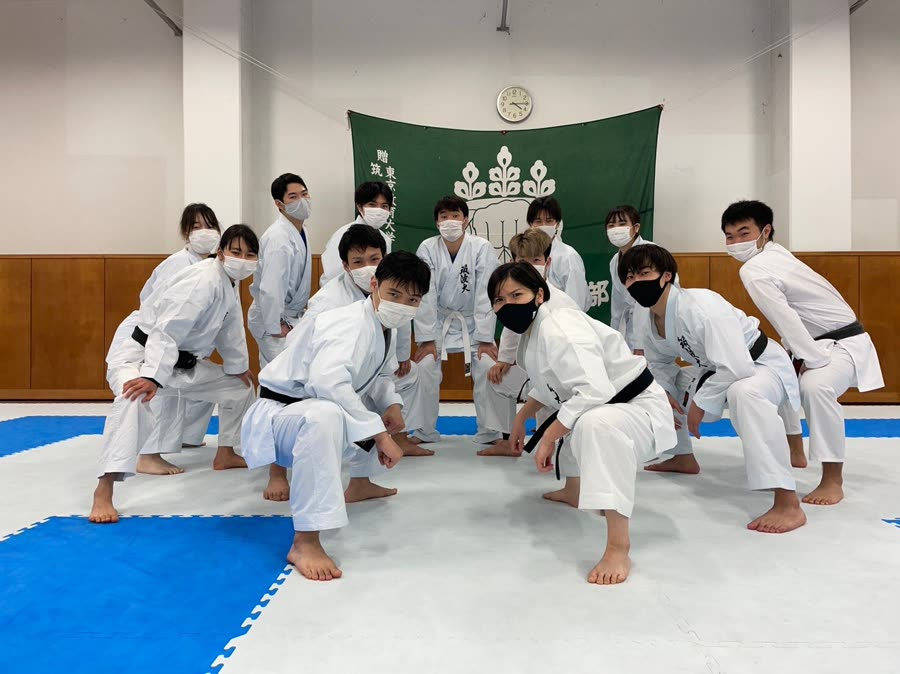
4歳で始めた空手。黒帯二段。その昔、全国大会で優勝したことも。
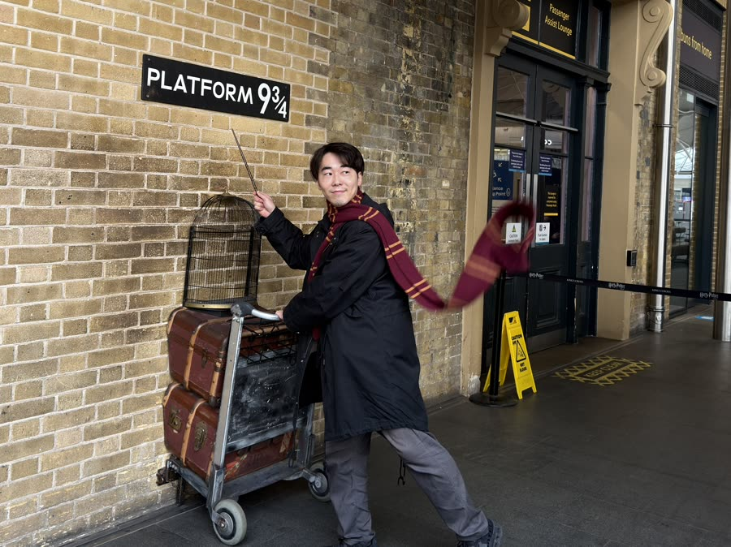